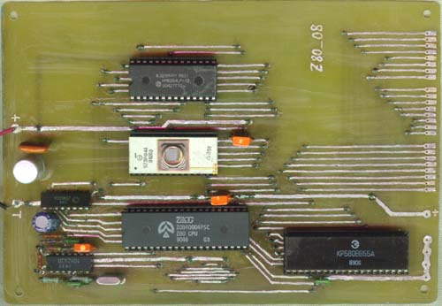
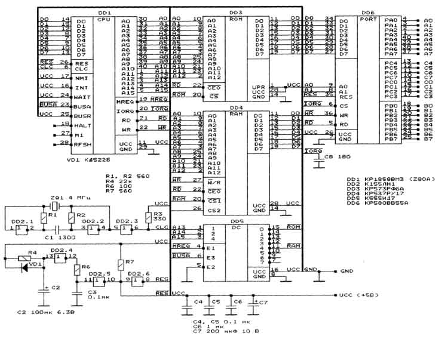

Микроконтроллер на основе
микропроцессора Z80,
ОЗУ 8 Кбайт, ПЗУ 8 Кбайт, 24 линии ввода-вывода
Микроконтроллер предназначен для построения различных
электронных цифровых устройств, для которых требуется сложная или гибкая логика
организации.
Характеристики:
- напряжение питания 5 В
- потребляемый ток не более 250 мА
- тактовая частота 4 МГц
- объем ПЗУ 8 Кб
- объем ОЗУ 8 Кб
- количество линий цифрового ввода-вывода 24
- нагрузочная способность линий ввода-вывода - один вход
ТТЛ
Внешний вид микроконтроллера:

Схема электрическая принципиальная:

Описание:
Микроконтроллер построен на основе микропроцессора Z80A
(КР1858ВМ3) с тактовой частотой 4 МГц (микросхема DD1). Генератор тактовых
импульсов и устройство формирования импульса сброса при включении собраны на
микросхеме DD2 (К155ЛН1). Дешифратор DD5 (К555ИД7) обеспечивает распределение
адресов памяти для микросхем ПЗУ (DD3 - КР573РФ6А) и ОЗУ (DD4 - КР537РУ17). ПЗУ
занимает область адресов памяти 0000H - 1FFFH. Область адресов ОЗУ 8000H -
9FFFH. Вершина стека - 9FFFH. Микросхема периферийного адаптера DD6 (КР580ВВ55А)
служит для организации внешнего ввода-вывода. Адреса портов: A - 0000H, B -
0001H, C - 0002H, РУС - 0003H в области адресов устройств ввода-вывода.
Ссылки:
- Аванесян Г. Р., Левшин В. П. Интегральные микросхемы ТТЛ,
ТТЛШ: Справочник. - М.: Машиностроение, 1993. - 256 с.: ил.
- Большие интегральные схемы запоминающих устройств:
Справочник / А. Ю. Гордонов, Н. В. Бекин, В. В. Цыркин и др.; Под ред. А. Ю.
Гордонова и Ю. Н. Дьякова. - М.: Радио и связь, 1990. - 288 с.: ил.
- Микроконтроллер на основе
микропроцессора Z80, ОЗУ 2 Кбайт, ПЗУ 2 Кбайт, 24 линии ввода-вывода
- Микропроцессорный комплект Z80: Справочное пособие. В
7-ми книгах. Кн. 1. "Центральный процессор Z80CPU". - Минск: УКИК "Центр",
1991.
- Микропроцессоры и микропроцессорные комплекты
интегральных микросхем: Справочник. В 2 т. / В.-Б. Б. Абрайтис, Н. Н.
Аверьянов, А. И. Белоус и др.; Под ред. В. А. Шахнова. - М.: Радио и связь,
1988. - Т. 1. - 368 с.: ил.
- Полупроводниковые БИС запоминающих устройств: Справочник
/ В. В. Баранов, Н. В. Бекин, А. Ю. Гордонов и др.; Под ред. А. Ю. Гордонова
и Ю. Н. Дьякова. - М.: Радио и связь, 1986. - 360 с.: ил.
- Шевкопляс Б. В. Микропроцессорные структуры. Инженерные
решения: Справочник. - 2-е изд. перераб. и доп. - М.: Радио и связь, 1990. -
512 с.: ил.
- Шевкопляс Б. В. Микропроцессорные структуры. Инженерные
решения. Дополнение первое: Справочник. - М.: Радио и связь, 1993. - 256 с.:
ил.
- Шило В. Л. Популярные цифровых микросхемы: Справочник.
2-е изд., испр. - Челябинск: Металлургия, Челябинское отд., 1989. - 352 с.:
ил. - (Массовая радиобиблиотека. Вып. 1111).
Словарь
терминов:
- Интегральная микросхема -
микроэлектронное изделие, имеющее высокую плотность упаковки электрически
соединенных элементов и предназначенное для обработки и преобразования
сигналов.
- Микросхема ТТЛ - интегральная микросхема
с биполярными транзисторно-транзисторными логическими схемами.
12.12.2003
27.01.2006
22.06.2010
Альтернативные источники
энергии
Компьютеры и
Интернет
Магнитные поля
Механотронные системы
Перспективные
разработки
Электроника и технология
Главная страница